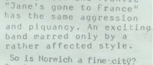
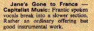
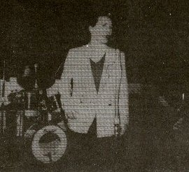

Thursday, April the 21st, 2011
back to: title, date or indexes
No luck as yet with the decipherment of the great Steve Bloch's lyrical sally in “Jane's Gone To France”. But for those of you keen to see the resurrection of perhaps the most important beat combo ever to mention Marshal Petain in a song, here are some cuttings culled from distant outposts of Interwebshire.
First, two reviews of the magnum opus itself, from a couple of local rags. Please note that a young Mr Key did not write either of them.


Second, unfortunately as low in resolution as he was high in importance, Bloch himself, on stage.
